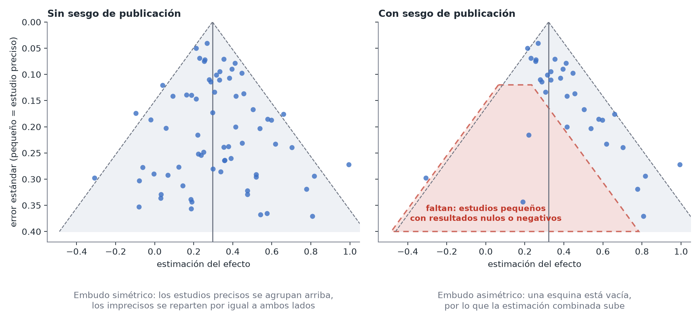

Metaanálisis: sesgos y trampas
En pocas palabras: combinar estudios hace que una respuesta parezca más sólida que la de cualquier estudio individual, pero no puede arreglar lo que falla en los estudios en sí ni en la forma en que se reunieron. Casi todo lo que puede salir mal ocurre antes de cualquier estadística.
1. Basura entra, basura sale
Un metaanálisis hereda las debilidades de sus estudios. Si los ensayos tenían una evaluación del desenlace sin enmascaramiento, o los estudios eran observacionales con confusión sin controlar, combinarlos da una versión más precisa del mismo sesgo, con un intervalo más estrecho y por tanto más engañoso. No mezcles experimentos aleatorizados y estudios observacionales en una sola cifra sin un buen motivo; si lo haces, muéstralos también por separado. Véase Experimentos vs. datos observacionales.
2. Cómo se encontraron los estudios
Theo quiere resumir los ensayos de un fármaco contra la hipertensión. Si incluye los que casualmente conoce, o deja de buscar cuando la respuesta le parece correcta, el resultado refleja sus decisiones y no la evidencia: es de nuevo el jardín de los senderos que se bifurcan, pero a nivel de la revisión. El remedio es de procedimiento: decide la pregunta, las bases de datos, los términos de búsqueda y los criterios de inclusión antes de mirar los resultados, déjalos por escrito (un protocolo) e indica cuántos estudios se encontraron, se cribaron y se excluyeron, y por qué. La declaración PRISMA 2020 es una lista de comprobación pensada justo para esto.
3. Sesgo de publicación y efectos de los estudios pequeños
Los estudios con resultados llamativos tienen más probabilidad de redactarse y publicarse que los que no encontraron nada, de modo que la literatura publicada sobrestima los efectos (el mismo mecanismo que los errores de tipo M). Dos comprobaciones habituales:
- Gráfico de embudo (funnel plot): el efecto de cada estudio frente a su precisión. Sin sesgo parece un embudo invertido simétrico; una esquina vacía (estudios pequeños con resultados nulos o negativos) sugiere que faltan algunos estudios.
- Regresión de Egger: una prueba estadística de esa asimetría.
Ambas son débiles. Con menos de unos 10 estudios tienen poca potencia, y la asimetría puede deberse también a otras causas (los estudios pequeños a menudo se llevan a cabo de manera distinta a los grandes, o con poblaciones distintas). Úsalas como una luz de aviso, no como prueba en ningún sentido, y di que la estimación combinada puede ser demasiado optimista. Buscar estudios no publicados (registros, preprints, contactar con los autores) es mejor que cualquier corrección estadística.

4. Comparar peras con manzanas
Si los estudios difieren en dosis, especie, población o definición del desenlace, «el efecto promedio» puede no describir nada real. Eso es lo que mide la heterogeneidad, y por eso el intervalo de predicción importa más que la media combinada. Una metarregresión o una comparación por subgrupos puede explorar por qué difieren los estudios (por ejemplo, según la dosis), pero trátala como exploratoria: las características de los estudios no están aleatorizadas, están enredadas entre sí y, con pocos estudios, hay poca potencia. Además, una relación entre estudios (mayor dosis media, mayor efecto medio) puede no cumplirse dentro de ningún estudio concreto.
5. Los estudios no siempre son independientes
Un metaanálisis asume que cada estimación aporta información distinta. Esto falla cuando:
- un estudio aporta varias estimaciones (dos dosis frente a un mismo control, varios desenlaces), o
- varios estudios proceden del mismo laboratorio, grupo o conjunto de datos.
Contar esos resultados como independientes estrecha demasiado el intervalo, exactamente igual que con los datos agrupados. Elige una estimación por estudio o modela la dependencia.
6. No cuentes votos
«Siete de diez estudios fueron significativos, así que funciona» ignora tanto el tamaño de los efectos como la potencia de cada estudio. Combina las estimaciones, no los veredictos.
7. Pocos estudios
Con dos o tres estudios, τ² no puede estimarse de forma fiable, y una estimación combinada puede confundir más de lo que aclara. Indica cuán pocos estudios tienes, usa el intervalo de Hartung-Knapp o un modelo bayesiano con una distribución a priori sensata para la dispersión entre estudios, y plantéate simplemente mostrar los estudios uno al lado del otro.
8. Mismos datos, otro problema
Si dispones de los datos en bruto de cada centro (cada paciente, cada familia), no necesitas un metaanálisis: analízalos como datos agrupados con el centro como grupo. Es más flexible, porque puedes ajustar a nivel individual. Un metaanálisis es para cuando solo tienes el resumen de cada estudio.
Una breve lista de comprobación
- La pregunta y los criterios de inclusión se escribieron antes de mirar los resultados.
- La búsqueda fue sistemática y se indica el número de estudios encontrados y excluidos.
- Los efectos están en una escala común y el error estándar de cada estudio es correcto.
- Efectos aleatorios, con τ, I² y un intervalo de predicción presentados.
- Se examinaron un diagrama de bosque, una comprobación dejando uno fuera (leave-one-out) y un gráfico de embudo.
- La calidad de los estudios y el sesgo de publicación se discuten como límites del resultado.